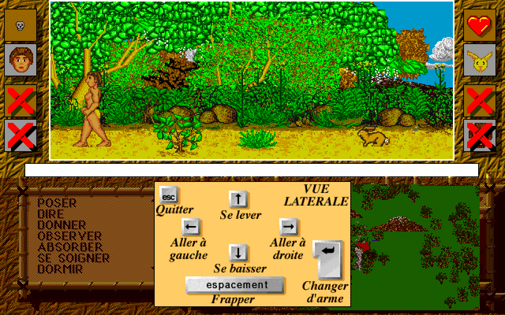
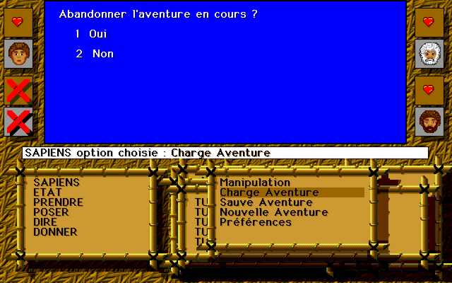

Про гру
Ви — Торган, молодий мисливець із племені Pieds-Agiles. Ви мандруєте просторою долиною у вигляді від першої особи: гори, ліси, джерела, хмари та грози. День змінює ніч, а голод, спрага й утома виснажують вас. Вам трапляються вовки, ведмеді, кролики та люди з інших племен: тоді доводиться битися — у боковому вигляді, сокирою, списом або голими руками… або ж розмовляти, обмінюватися дарунками й заводити союзників.
Обтісуйте кремінь, щоб робити зброю, збирайте ягоди й коріння, лікуйте рани, спіть біля вогнища. Тут хитрість і дипломатія часто важать більше за силу.



Завдання
Hognor, вождь вашого племені, доручає вам дедалі важчі випробування:
- Принести їжу: плем'я голодує.
- Здобути в Yeux-Malins Зілля життя, бо молоді наїлися отруйних ягід.
- Прийняти виклик Bras-de-Roc: перемогти їхнього вождя й відібрати в нього Сокиру зі слонової кістки.
- Повернути Священний посох, украдений Hyènes-Folles.
- І нарешті… нехай закон сили вкаже нового вождя.
Pieds-Agiles
Ваше плем'я. Вождь: Hognor.
Yeux-Malins
Хитрі цілителі. Вождь: Sl-Oom.
Bras-de-Roc
Грізні воїни. Вождь: Grungh.
Hyènes-Folles
Грабіжники з півдня. Вождь: Krok-G.
Керування
Комп'ютер
- Миша
- Обирайте дію в меню внизу (стрілки ▲▼ для прокручування), клацніть по картинці, щоб роззирнутися
- ← →
- Краєвид: поворот · боковий вигляд: ходьба
- ↑ ↓
- Краєвид: прискорення / сповільнення · боковий вигляд: підвестися / присісти
- Пробіл
- Краєвид: карта · боковий вигляд: удар
- Enter
- Змінити зброю (або права кнопка миші)
- Esc
- Вийти з вигляду (або клацання)
- Цифр. блок
- Другий гравець (8246, 1 удар, 3 зброя)
Телефон
- Дотик
- Як клацання миші: уся гра ведеться через меню (Дивитися › Краєвид, щоб вирушити на розвідку)
- Джойстик
- Ліва смуга: поворот, рух уперед (краєвид), ходьба (боковий вигляд)
- УДАР
- Боковий вигляд: удар · краєвид: карта
- ЗБРОЯ
- Боковий вигляд: змінити зброю
- ВИЙТИ
- Вийти з поточного краєвиду чи вигляду (можна й торкнутися картинки)
- КАРТА
- Карта в краєвиді
Довга історія
- 1986 — Перша версія, написана на асемблері для Thomson MO5 і TO7/8/9 та Amstrad CPC, потім переписана на C для ПК.
- 1987 — Барвистіша версія для Atari ST.
- 1996 — Вихідні коди на C дістають із коробок: версія для MacOS і Windows.
- 2017 — Sapiens стає безкоштовною програмою (freeware).
- 2018 — Myriad публікує вихідний код за ліцензією GNU GPL v3.
- Сьогодні — Порт на PHP, доступний у браузері.
100 % PHP
Ця версія — точний порт, функція за функцією, вихідних кодів на C 2018 року на PHP на фреймворку JumPHP. Той самий код працює на комп'ютері (PHP + SDL2) і в браузері (PHP, скомпільований у WebAssembly). Спрайти, звуки й тексти — з оригінальної гри.
Вихідний код: github.com/davidnurdin/sapiensPhp · оригінальні джерела: сторінка Sapiens open source на сайті Myriad.